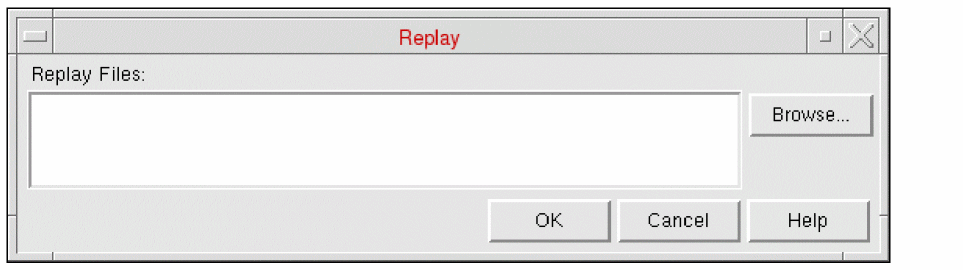

Replaying Commands in Abstract Generator
Every operation you perform during a session is recorded in a.record file. This allows you to rerun any session in batch mode and create user-defined macros with a minimum of manual intervention. This file can then be replayed in either GUI or non-GUI mode.
-
Choose File – Replay to start this command. This displays the Replay form.
 - Specify the name of the file to be replayed in the Replay Files field. Use the Browse function to help you locate it if required.
- Click OK to replay the session described in the file.
The contents of a sample replay file are shown below.
absSkillMode()
absSetLibrary(“amsPLL”)
absSelectCellFrom(“pllclk25” “pllclk25”)
absSetBinOption(“Block” “PinsTextPinMap” “(Metal1 Metal1)(Metal2 Metal2)(Metal3 Metal3)(Metal4 Metal4)”)
absAbstract()
absSetOption(“ExportLEFVersion” “5.5”)
absExportLEF()
absExit()
When replaying a session, the record function is automatically turned off.
Related Topics
Recording Commands and Events in Abstract Generator
Return to top